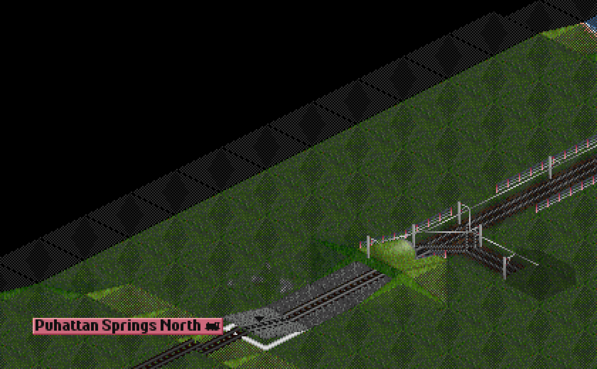
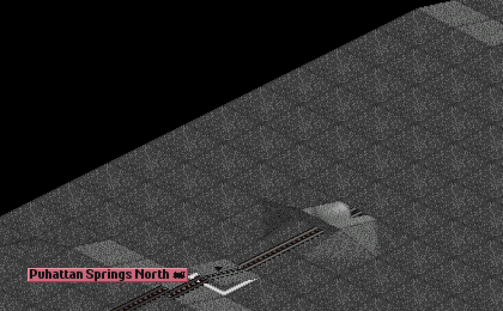
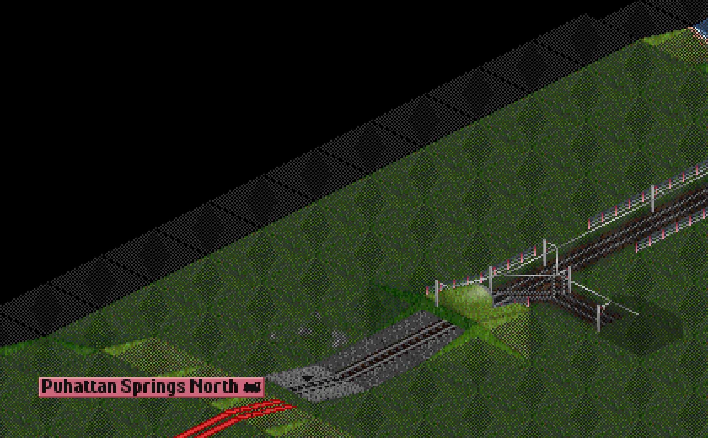
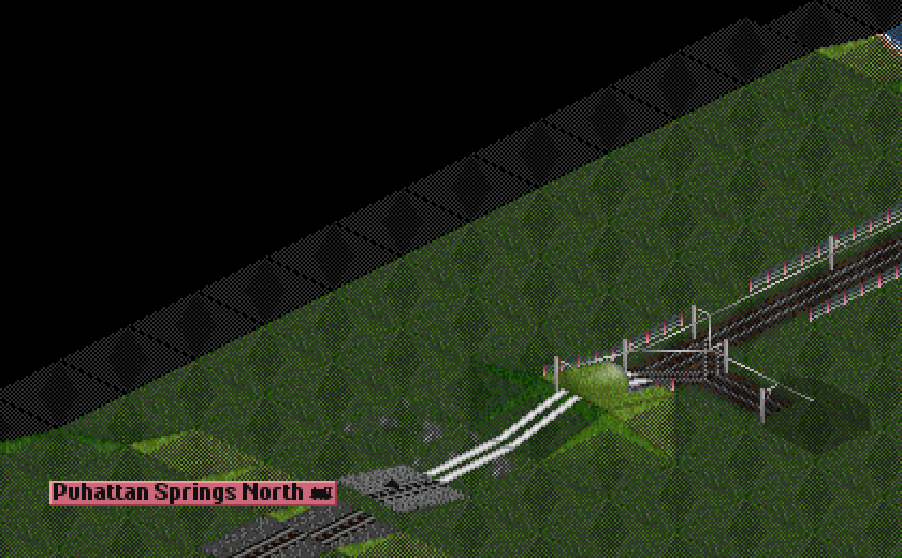
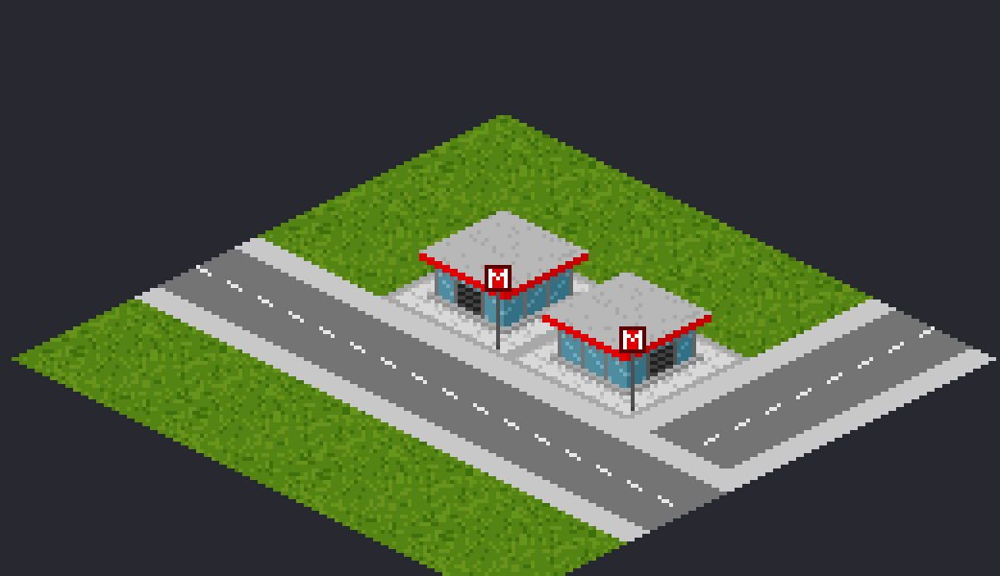
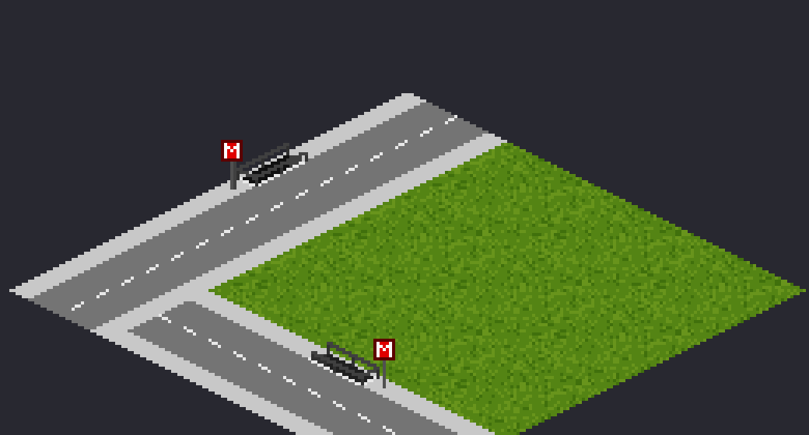
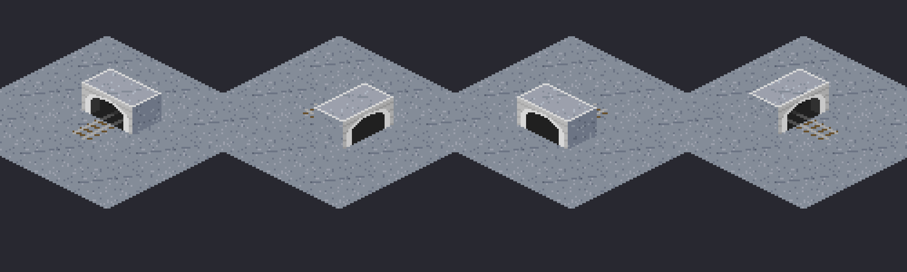
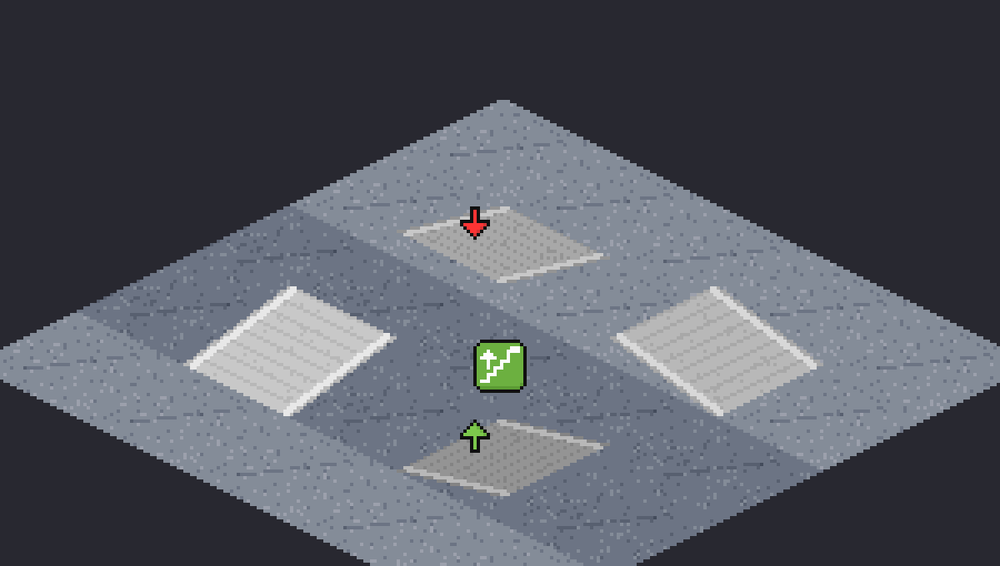

OpenTTD Underground adds a multi-level underground railway to OpenTTD. You can lay track, stations and platforms on several levels below the ground, connect them to the surface with portals and ramps, and run trains through them.
In standard OpenTTD a tunnel only runs into a hill, through one plane of ground. In OpenTTD Underground:
This page shows how to open the underground toolbar, move between levels and choose what you see.
Press Ctrl+U, or use the underground button of the main toolbar. This opens the Underground Construction toolbar on the level you are viewing. Its tools build on that level.
The number in the toolbar is the level you are building on. It reads Surface when you build on the ground.

Level −1 seen as a slice. The tracks and platform are underground; the green is the surface above them.

The same slice with the surface turned off: only the underground level remains.
| Action | Key or button | Result |
|---|---|---|
| One level deeper | Page Down or the down arrow | From the surface, goes underground to the level you viewed last. Then one level further down each press. |
| One level higher | Page Up or the up arrow | One level up. From the highest underground level, goes back to the surface. |
| Surface or underground | Click the level number | Switches between the surface and the underground. |
The tools always build on the level you are viewing, not on the surface. If a tool seems to do nothing, check the level number in the toolbar.
Views decide what you see on the map. Each one can be switched on and off.
| View | Key | What it shows |
|---|---|---|
| Slice | Shown when you view a level | The viewed level as a cut through the ground, so you see its track and stations at their depth. The surface above it can be turned off. |
| X-ray | Ctrl+Home | The surface with the viewed underground level drawn through it. Good for seeing where a tunnel lies under a town. |
| Below | Ctrl+Page Down | The levels below the viewed level, drawn at their own depth, without the surface. Building still happens on the viewed level. |
| Above | Ctrl+Page Up | The levels above the viewed level, drawn at their own depth, without the surface. Building still happens on the viewed level. |


Press Page Up from the highest underground level, or click the level number, to return to the surface. The surface toolbar tools then build on the ground again.
Hold Shift while using a tool to see the cost estimate without building. Estimates include the soil, so you can compare a route at two depths before you pay for it.
Track, stations, portals and ramps are built on the level you are viewing. This page describes each one and the rules that apply.
Use the track tool on the viewed level and drag along the tiles. Underground track joins the track next to it, on the same level. A drag builds a straight line or a curve as you would on the surface.
Each piece is priced by the soil at its depth. See Soil and prices.
Underground stations are built with the station tool on the viewed level, just like surface stations. A station can be as deep as the deepest station level allows. The default is level −3, set by Deepest level of stations. Stations can never go deeper than tunnels.
A station needs exits to reach the surface. Use a pavilion or an underpass, below.
An exit links an underground station to the surface. Both kinds must be within the exit distance of the station's platforms. The default distance is 2 tiles, set by Maximum distance of a metro station exit from its platforms.


By default the exits take only passengers and mail from the houses and industries around them, and give them only those. Set Cargo through underground station exits to All cargo to serve freight through them too. Surface platforms and stops joined to the same station always serve all cargo in their own catchment, and freight unloaded underground for a transfer still waits at the station. Games saved by an earlier version keep All cargo.
To remove an exit, remove it on the surface first; the error remove the metro station exit first means that you must do so before you remove the station.
A portal is the entrance between the surface line and the underground. Build it with the portal tool.
Choose the direction like for a ramp. On flat ground the portal dives into the ground towards the tile edge nearest to your cursor, or drag from the portal's tile along a line to lead it towards the drag. On a hillside the slope sets the direction. Before you click, a ghost of the portal shows where it goes: the arrow points along the line into the tunnel, its tail is the side the surface line comes from. A red ghost means it cannot be built there.

Tunnel mouths: a dive portal on flat ground and a hillside mouth at the foot of a slope.
A portal is priced with the portal multiplier, and always with the soil of the first underground level.
A ramp connects two neighbouring levels: for example, level −1 to level −2. Ramps are the way to go deeper or shallower inside the ground without a portal.

Ramp ghosts: green arrows show where a ramp can go, the red arrow where it cannot.
A ramp is priced with the soil of its lower level, and its price is set by the ramp multiplier.
Construction is refused with a short reason in the status line. The usual reasons are:
Trains use the same signals underground as on the surface. This page explains where to put them, how trains reserve track, what happens at portals, and how to avoid jams.
All standard OpenTTD signal types can be built underground:
Signals can also stand on ramps between two levels.
A train coming out of a portal into the surface waits until the way ahead is free. The train that enters the last block before a portal decides whether it may come out, and it claims the mouth so no other train enters it. Keep at least one free block after a portal so that trains can leave it without waiting in the tunnel.
When a train is stuck, check which signal it waits at and whether the track ahead is reserved by another train. Trains at a red signal wait; they do not drive through it.
The game comes with a metro set: metro track and five generations of metro cars. It is active in a first new game, so you can build a metro right away, nothing to download.
The set is the NewGRF OpenTTD Underground Metro Set, installed with the game as newgrf/metro_set.grf. The first time you start this game, the set is added to the end of the NewGRF list of a new game, even when your configuration already has a list from another OpenTTD build. This happens only once; after that the list is yours: you can remove the set or add it again in NewGRF Settings of the main menu. A game that is already running keeps the NewGRFs it was started with.
Open the railway construction menu of the main toolbar and choose Metro track. It is ordinary track with a yellow conductor rail beside one running rail, available from the start of any game, with no speed limit and the price of electrified rail. Build it on the surface or underground, with portals and ramps, like any other track; signals are the usual ones.
Metro cars run only on metro track, and ordinary trains do not run on it. Build a depot on metro track to buy metro cars.
Every metro car is a self-propelled car of a multiple unit. Buy a car in a metro depot, buy more cars of the same type and drag each one onto the first in the depot window. Typical trains are 4 to 8 cars. The cars at both ends of a train show a cab, the cars in the middle do not. For the 717, put a 717 at each end and 714 cars in the middle. Clone the finished train with the Clone train button of the depot.
A car is half a tile long and carries passengers only, with fast loading.
| Car | On sale from | Speed | Passengers per car | Notes |
|---|---|---|---|---|
| Type A | 1935 | 65 km/h | 147 | Riveted car of the 1930s. On sale for 30 years. |
| Type E | 1959 | 90 km/h | 148 | Light two-tone car of the 1960s. |
| 717 | 1976 | 90 km/h | 173 | Car with a cab, for the ends of a train. |
| 714 | 1976 | 90 km/h | 173 | Car without a cab, for the middle of a 717 train. |
| 720 | 1991 | 100 km/h | 185 | Car of the 1990s with a sloped cab. On sale for 15 years. |
| 765 | 2016 | 90 km/h | 176 | Modern car with wide glazing. Never goes off sale. |
The years and speeds follow the real Moscow metro cars of the same names. A car costs about as much as a passenger locomotive of its time, so a metro is a way to move many people through a city, not an easy money maker.
The set is an ordinary NewGRF and is saved with the game. Everyone who plays this fork has it, so a server and its clients need nothing extra. A client of standard OpenTTD would be asked to download the set from online content, where it is not published.
The ground has 11 soil layers by depth. Building deeper costs more. This page lists the layers, the multipliers that set the price, and where you change them.
The soil at a level depends on its depth below the ground of the tile. The depth is the level's height minus the height of the ground. A hill is harder to dig through than flat ground, because a level in a hill is deeper below the surface.
The soil is not saved. It follows from the height of the land and the level. If you raise the land above a tunnel, the soil for later work there changes too.
| Depth below ground | Soil | Tunnel × | Station × |
|---|---|---|---|
| 1 | Earth (black, with roots) | 1 | 1 |
| 2 | Light clay | 1.5 | 1.5 |
| 3 | Clay | 2 | 2 |
| 4 | Dark clay | 2.5 | 2.5 |
| 5 | Light marble | 3 | 3.5 |
| 6 | Grey marble | 3.5 | 4 |
| 7 | Pink granite | 4 | 5 |
| 8 | Grey granite | 5 | 6 |
| 9 | Dark granite | 6 | 7 |
| 10 | Black granite | 7 | 8 |
| 11 and deeper | Obsidian | 15 | 20 |
These are the default multipliers. Each can be changed on the settings page; see below.
Under a river, a canal or the sea, the earth and clay near the surface are replaced by sand. The sand takes the place of depths 1 to 3, then the layers go on as on land.
| Depth below the water bed | Soil | Tunnel × | Station × |
|---|---|---|---|
| 1 | Light sand | 4 | 5 |
| 2 | Sand | 4 | 5 |
| 3 | Dark sand | 4 | 5 |
| 4 and deeper | As on land (dark clay, marble, granite, obsidian) | as above | as above |
The three sand layers share one multiplier each for tunnels and stations. Water itself is not dug through: the depths the water fills are closed to construction. See Houses and water.
Underground construction costs the surface price of the same thing, times the base multiplier, times the soil multiplier of its tile. Ramps and portals also have their own multiplier:
The base multiplier is 10 by default, which means ×10 for the whole price. The soil and ramp and portal multipliers are typed in tenths: 15 is ×1.5.
Some examples with the default values:
The tooltip under the cursor shows the soil and its multiplier, e.g. Dark clay, ×2. Hold Shift for the total cost estimate.
Removing underground construction pays back a share of its build price. The default share is 25%.
Older saves keep what they have. Something already built deeper than a new limit stays and can be removed, but nothing new can be built past the limit.
Open the game Settings and go to the Underground page. It has these sub-pages:
The full list, with defaults and ranges, is on the Settings reference page. These are game settings: they are saved in the save game and apply to every player in a multiplayer game.
The surface limits how deep you can build. Houses have foundations, and water keeps underground construction out down to its depth. This page explains both rules and the messages you see when they apply.
A house reaches down into the ground by its foundation depth. You cannot build underground at or above that depth below the house. The foundation is worked out from the population of the house per tile, compared with the largest population per tile of all houses in the game:
| House | Foundation |
|---|---|
| Low houses: small homes, shops, low offices | 0 levels. Nothing is blocked. |
| Medium houses: tall residential, hotels, medium offices | 1 level |
| Tallest houses: skyscrapers, high offices, towers | 2 levels |
The rule works both ways: the town does not put a tall house over your tunnel, and you cannot build a tunnel under a house's foundation. Tunnels that were already built under a house before the rule applied stay where they are.
Industries have basements too: 2 levels by default, set by Foundation of industries on the settings page (0 to 2). You cannot build underground at or above that depth below an industry tile, and no industry is set up, funded or prospected over underground construction that shallow. A change of the setting only affects new construction: tunnels already under an industry stay. In the slice view the basement is drawn as a store room full of pallets, boxes and crates.
Water has a depth too. Nothing is built at or above that depth below the water.
| Water | Depth |
|---|---|
| River or canal, a tile next to land | 1 level |
| River or canal, a tile in the middle (water on all four sides) | 2 levels |
| Sea, first tile from the shore | 1 level |
| Sea, second tile from the shore | 2 levels |
| Sea, third tile from the shore and further out | 3 levels |
A canal cannot be dug if its water would reach a tunnel that is already built. Land that becomes water next to a tunnel is checked the same way: the error is underground construction in the way. Water that is already there and over a tunnel stays.
In the slice view, a level with a house foundation is drawn as an underground car park, and a level in the water is drawn as water, darker with each level. In the land information, the tile says house foundation, water or no construction under the sea instead of the soil.
A blueprint is a copy of underground construction, which you can paste elsewhere. It covers several levels in one go, so you can copy a whole station with its tunnels.
Press Ctrl+B, or click the BP button of the railway construction toolbar. The console command blueprint gui does the same.
Off by default. With it off, nothing is built if any piece cannot be built or you cannot afford the whole. With it on, pieces that cannot be built are left out, and the paste reports how many were.
Toolbar track builds everything with the track type you last chose in the railway construction toolbar.
Trains, their reservations, owners, station names (each station of a blueprint becomes a new station), vanilla surface stations and waypoints, bridges, vanilla tunnels, roads and level crossings are not copied.
Blueprints are .json files in the blueprint folder of your OpenTTD personal directory. The console command list_dirs blueprint shows the folders that are searched.
Use the land information tool, or the tooltip of a tool, to see what is under a tile and what it costs.
Click a tile with the land information tool. For underground construction on a tile, the window says the level, how far below the ground it is, and the soil. For example:
On an empty tile in the slice view, the window also says what the level is made of at that depth: its soil, a house foundation, water, or the sea where nothing may be built.
Hover the cursor over a tile with a construction tool. The tooltip shows the soil and its multiplier for that depth, e.g. Dark clay, ×2, and the depth below the ground.
Hold Shift while you use a tool, or in the demolish tool, to see the total price without building or removing anything. The estimate uses the same price as the real build, so the two agree.
Every underground setting, with the name shown in the game, the default and the range. The game name is what you see in Settings, under Underground. The key is used in configuration files and scripts.
All these are game settings. They are saved in the save game and are the same for every player in a multiplayer game. Older saves get the default values.
| Setting in the game | Key | Default | Range |
|---|---|---|---|
| Deepest level of tunnels | underground.deepest_tunnel_level | −3 | −10 to −1 |
| Deepest level of stations | underground.deepest_station_level | −3 | −10 to −1, not deeper than tunnels |
| Deepest underground level below the surface | construction.max_underground_depth | 10 | 1 to 15 |
| Tunnels under the sea | underground.sea_tunnels | Below the water (normal) | Forbidden (stricter) or Below the water (normal) |
| Foundation of the tallest houses from | underground.foundation_high_percent | 60% | 10 to 100% |
| Foundation of medium houses from | underground.foundation_medium_percent | 25% | 0 to 100%, not above the tallest threshold |
| Foundation of industries | underground.industry_foundation_depth | 2 levels | 0 to 2 levels |
| Maximum distance of a metro station exit from its platforms | construction.max_station_exit_distance | 2 tiles | 1 to 6 tiles |
| Cargo through underground station exits | underground.exit_cargo | Passengers and mail | Passengers and mail, or All cargo |
| Setting in the game | Key | Default | Range |
|---|---|---|---|
| Base underground price multiplier | underground.base_cost_multiplier | ×10 | ×1 to ×50, whole numbers |
| Ramp price multiplier | underground.ramp_cost_multiplier | ×3 (30) | ×1 to ×10 (10 to 100) |
| Portal price multiplier | underground.portal_cost_multiplier | ×2 (20) | ×1 to ×10 (10 to 100) |
The soil multipliers are typed in tenths in the key: 15 means ×1.5.
| Setting in the game | Key | Default |
|---|---|---|
| Tunnel in earth (depth 1) | underground.tunnel_cost_earth | 10 (×1) |
| Tunnel in light clay (depth 2) | underground.tunnel_cost_clay_light | 15 (×1.5) |
| Tunnel in clay (depth 3) | underground.tunnel_cost_clay | 20 (×2) |
| Tunnel in dark clay (depth 4) | underground.tunnel_cost_clay_dark | 25 (×2.5) |
| Tunnel in light marble (depth 5) | underground.tunnel_cost_marble_light | 30 (×3) |
| Tunnel in grey marble (depth 6) | underground.tunnel_cost_marble_grey | 35 (×3.5) |
| Tunnel in pink granite (depth 7) | underground.tunnel_cost_granite_pink | 40 (×4) |
| Tunnel in grey granite (depth 8) | underground.tunnel_cost_granite_grey | 50 (×5) |
| Tunnel in dark granite (depth 9) | underground.tunnel_cost_granite_dark | 60 (×6) |
| Tunnel in black granite (depth 10) | underground.tunnel_cost_granite_black | 70 (×7) |
| Tunnel in obsidian (depth 11+) | underground.tunnel_cost_obsidian | 150 (×15) |
| Tunnel in sand below water (depth 1 to 3) | underground.tunnel_cost_sand | 40 (×4) |
Each soil multiplier can be set from ×0.5 to ×50 (5 to 500).
| Setting in the game | Key | Default |
|---|---|---|
| Station in earth (depth 1) | underground.station_cost_earth | 10 (×1) |
| Station in light clay (depth 2) | underground.station_cost_clay_light | 15 (×1.5) |
| Station in clay (depth 3) | underground.station_cost_clay | 20 (×2) |
| Station in dark clay (depth 4) | underground.station_cost_clay_dark | 25 (×2.5) |
| Station in light marble (depth 5) | underground.station_cost_marble_light | 35 (×3.5) |
| Station in grey marble (depth 6) | underground.station_cost_marble_grey | 40 (×4) |
| Station in pink granite (depth 7) | underground.station_cost_granite_pink | 50 (×5) |
| Station in grey granite (depth 8) | underground.station_cost_granite_grey | 60 (×6) |
| Station in dark granite (depth 9) | underground.station_cost_granite_dark | 70 (×7) |
| Station in black granite (depth 10) | underground.station_cost_granite_black | 80 (×8) |
| Station in obsidian (depth 11+) | underground.station_cost_obsidian | 200 (×20) |
| Station in sand below water (depth 1 to 3) | underground.station_cost_sand | 50 (×5) |
Station multipliers are relative to the price of a surface station tile, not of a rail piece.
| Setting in the game | Key | Default | Range |
|---|---|---|---|
| Refund on removal | underground.refund_percent | 25% | 0 to 100% |
| Soil counts in the refund | underground.refund_soil | Yes | Yes or no |
Read the reason in the status line when a tool refuses. The most common ones are listed on Building underground and Houses and water. In short: a house foundation or water is above that depth, another structure is in the way, the level is too deep, or the level is above ground.
The price is the surface price times the base multiplier (10 by default) times the soil multiplier. Deep soil such as granite and obsidian costs much more than earth. Check the soil in the tooltip and lower the level to save money. The Soil and prices page has the table.
Yes. Raising the land makes the tile deeper below the ground, so the soil for later work there changes. Removing the tunnel later still refunds no more than you paid, so raising the land does not make removal profitable.
You cannot lower the land above a tunnel.
A train leaves a portal only when the track after it is free. Look at the signals beyond the portal and check whether another train is waiting in the block after the mouth. See Signals and trains.
A one-way signal at a dead end stops trains from turning back. Use a two-way path signal there, or give the trains a loop or a turning platform.
By default, yes: below the water, at the depth of the sea there. Nothing can be built within the water column itself. The Tunnels under the sea setting can forbid it altogether. See Houses and water.
Yes. A save from before these rules gets the default values for the new settings. Tunnels that were built under houses deeper than the new rule allows keep working. Nothing new can be built there, and the town will not build a tall house over them.
In the blueprint folder of your OpenTTD personal directory. The console command list_dirs blueprint shows the folders that are searched. See Blueprints.
A paste is refused if any piece cannot be built or you cannot afford all of it, unless Build what fits is on. Look at the ghost first: red shows what is in the way. Use Shift+click to see the cost before you paste.
Switch on a view. The underground is drawn only in the views that show it: the slice of the viewed level, the X-ray, or the levels above and below. Use Ctrl+Home for X-ray.
Yes, a browser version lives at play/. It runs the same game in your browser, without a download.
Yes. Underground settings are game settings, so they are stored in the save and the same for every player. Change them before the game, or with the other players agreed.
This page is for people who want to build OpenTTD Underground themselves. The full build instructions for OpenTTD are in COMPILING.md in the repository.
COMPILING.md, or the vcpkg manifest vcpkg.json in the repository.mkdir build
cd build
cmake ..
makeBy default this makes a Debug build, which is much slower. For a release build, add -DCMAKE_BUILD_TYPE=RelWithDebInfo or Release to the cmake line.
Open the folder as a CMake project in Visual Studio 2022, or generate a Visual Studio project from the command line. Set your vcpkg triplet and toolchain file as COMPILING.md describes, for example:
cmake .. -G "Visual Studio 17 2022" -DCMAKE_TOOLCHAIN_FILE="path\to\vcpkg\scripts\buildsystems\vcpkg.cmake" -DVCPKG_TARGET_TRIPLET=x64-windows-staticThe game needs graphics files (OpenGFX and the underground sprites). You do not need GRFCodec to build the game or play it.
GRFCodec is only needed to recompile the base graphics, for example after changing the underground sprites. Having it installed can regenerate the .grf files in the source folder, which then show up as changes in git. Only install it if you intend to rebuild the graphics, and check the diff before you commit.
OpenTTD Underground is based on OpenTTD, a transport simulation game based on Transport Tycoon Deluxe by Chris Sawyer. The OpenTTD developers wrote the base game. The list of their names is in CREDITS.md in the repository.
The underground system, the soil and price rules, the house and water rules, the signals and the blueprints are the work of the author of this fork, povstenid. This fork is not part of the official OpenTTD project.
OpenTTD is released under the GNU General Public License, version 2. OpenTTD Underground is released under the same license. The full text is in COPYING.md in the repository. Some third-party parts have their own licenses; see the readme.
The game comes with no warranty.